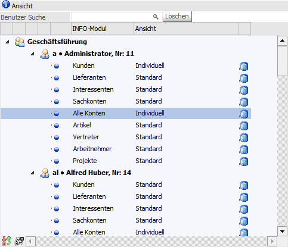
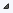
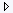
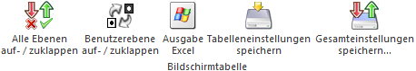

In der Tabelle "Ansicht" kann das INFO-Modul, für welches eine individuelle Ansicht erzeugt werden soll, ausgewählt werden.
Hinweis
Die Anzeige in der Tabelle und den daraus resultierenden Möglichkeiten richtet sich nach der Berechtigung des Benutzers:
ü WinLine Benutzer des Typs
"Administrator" oder mit der Administratorenberechtigung
"Datenadministration"
In der Tabelle werden alle Benutzergruppen und Benutzer
angezeigt, wodurch auch Ansichten für andere Benutzer definiert werden können.
Zusätzlich besteht die Möglichkeit Ansicht auf einen Benutzer oder eine
Benutzergruppe zu kopieren.
ü Normaler WinLine Benutzer
In
der Tabelle "Ansicht" wird die eigene Benutzergruppe und der eigene Benutzer
angezeigt. In weiterer Folge können Ansichten für sich selbst definiert bzw.
editiert werden.

Das Kopieren kann hierbei über unterschiedliche Wege erfolgen:
ü Drag & Drop einer Ansicht auf das passende INFO-Modul eines anderen Benutzers
ü Drag & Drop eines Benutzers auf einen anderen Benutzer
ü Drag & Drop eines Benutzers auf eine Benutzergruppe
In der Tabelle (bzw. darüber) werden folgende Informationen und Felder dargestellt:
Ø Benutzer Suche
Durch Eingabe eines Namens werden in der Tabelle "Ansicht" nur die passenden Einträge angezeigt.
Ø Löschen
Die Eingabe unter "Benutzer Suche" wird entfernt.
Ø Spalte "Benutzergruppe"
In der ersten Spalte werden die Benutzergruppen angezeigt. Mit Hilfe des Symbols

bzw.
können die Benutzer der Gruppe ein- bzw. ausgeblendet werden.
Ø Spalte "Benutzer"
Unterhalb der Benutzergruppen werden die Benutzer einer Gruppe angezeigt. Mit Hilfe des Symbols bzw. können die INFO-Module des Benutzers ein- bzw. ausgeblendet werden.
Ø Spalte "INFO-Modul"
In dieser Spalte werden alle INFO-Module pro Benutzer aufgelistet. Durch Anwahl eines Moduls wird die rechte Tabelle (Darstellung) aktualisiert.
Ø Spalte "Ansicht"
In dieser Spalte wird dargestellt, ob es sich um die Standardansicht oder um eine individuelle Ansicht handelt.
Ø Spalte "Löschen"
Mit Hilfe des Symbols können individuelle Ansichten gelöscht werden.
Tabellenbuttons

Ø Alle Ebenen auf- / zuklappen
Die Ebenen "Benutzergruppe" und "Benutzer" wird auf- bzw. zugeklappt.
Ø Benutzerebene auf- / zuklappen
Die Ebene "Benutzer" wird auf- bzw. zugeklappt.
Ø Ausgabe Excel
Durch Anwahl des Buttons "Ausgabe Excel" wird der Inhalt der Tabelle nach Microsoft Excel übergeben.
Ø Tabelleneinstellungen speichern
Die Spalten einer Tabelle können grundsätzlich an beliebige Positionen verschoben, bzw. in der Breite entsprechend angepasst werden. Durch Anwahl des Buttons "Tabelleneinstellungen speichern" werden die Einstellungen benutzerspezifisch gespeichert und bei dem nächsten Aufruf des Programmpunktes wieder vorgeschlagen.
Ø Gesamteinstellungen speichern
Im Gegensatz zu "Tabelleneinstellungen speichern" können mit "Gesamteinstellungen speichern" mehrere Tabellenaufbauten gespeichert und nach Wunsch geladen werden. Zusätzlich werden Sonderfunktionen der Tabelle (z.B. "Spalte gruppieren") ebenfalls bei der Speicherung bedacht.